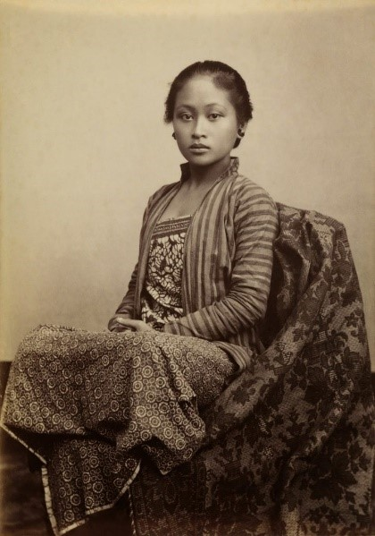

Pada tahun ini, Indonesia lampau berada di bawah kekuasaan kolonial Belanda. Oleh sebab itu, terdapat beberapa perbedaan tata busana pada orang pribumi dan orang Belanda. Orang pribumi menggunakan kebaya lengkap dengan kain dan selendang yang diselempang.
Pajang.1 Kala
Pajang.2 Kala

Pajang.3 Kala
* ETIMOLOGI // IKET *
Bagi orang Jawa arti iket adalah agar manusia memiliki pamikir atau pemikiran yang kencang, tidak mudah terombang – ambing hanya karena factor situasi atau orang lain tanpa pertimbangan yang matang.
* ETIMOLOGI // UDHENG *
Udheng berasal dari kata mudheng artinya mengerti dengan jelas. Maknanya manusia akan memiliki pemikiran yang kukuh bila sudah mudheng atau memahami tujuan hidupnya. Manusia memiliki fitrah untuk senantiasa mencari kesejatian hidup sebagai sangkan paraning dumadi. Makna lain dari udheng ini adalah agar manusia memiliki keahlian / ketrampilan serta dapat menjalankan pekerjaannya dengan pemahaman yang memadai karena memiliki dasar pengetahuan.
* ETIMOLOGI // RASUKAN *
Rasukan Sebagai ciptaan Yang Maha Kuasa, hendaklah manusia ngrasuk atau menganut sebuah jalan atau agama dengan kesadaran penuh menyembah Tuhan Yang Maha Esa.
* ETIMOLOGI // BENIK *
Benik ( kancing ) disebelah kiri & kanan. Lambang dari benik itu adalah bahwa manusia dalam melakukan tindakannya dalam segala hal selalu diniknik; artinya diperhitungkan dengan cermat.
* ETIMOLOGI // SA-BUK *
Sa-buk artinya hanya impas saja, ngga untung & ngga rugi. Makna sabuk adalah agar manusia menggunakan badannya untuk bekerja sungguh – sungguh, jangan sampai pekerjaannya tidak menghasilkan atau tidak menguntungkan ( buk )
* ETIMOLOGI // EPEK *
Epek Persamaan Epek adalah apek; golek; mencari. Artinya dalam hidup ini, kita harus memanfaatkannya dengan mencari ilmu pengetahuan yang berguna.
* ETIMOLOGI // TIMANG *
Timang adalah pralambang bahwa ilmu yang ditempuh harus dipahami dengan jelas & gamblang, agar tidak gamang atau menimbulkan rasa kuatir.
* ETIMOLOGI // JARIK *
Jarik artinya aja serik. Jangan mudah iri terhadap orang lain, karena iri hati hanya akan menimbulkan rasa emosional, grusa – grusu dalam menanggapi segala masalah.
* ETIMOLOGI // WIRU *
Wiru atau wiron bisa terjadi dengan cara melipat – lipat ujung jari sehingga berwujud wiru. Wiru artinya wiwiren aja nganti kleru. Olahlah segala hal sedemikian rupa sehingga menumbuhkan rasa menyenangkan dan harmonis, jangan sampai menimbulkan kekeliruan dan disharmoni.
* ETIMOLOGI // BEBED *
Bebed adalah kain atau jarik yang dikenakan laki – laki. Bebed artinya manusia harus ubed yakni tekun dan rajin dalam bekerja mencari rezeki.
* ETIMOLOGI // CANELA *
Canela dijabarkan dari canthelna jroning nala, atau peganglah kuat di dalam hatimu.
* ETIMOLOGI // CURIGA & WARANGKA *
Curiga dan warangka adalah pralambang bahwa manusia sebagai ciptaan menyembah Tuhan sebagai penciptanya dalam sebuah hubungan kawula jumbuhing Gusti. Curiga ditempatkan di belakang artinya dalam menyembah yang Maha Kuasa hendaknya manusia bisa ngungkurake godhaning Syetan yang senantiasa mengganggu manusia ketika akan bertindak kebaikan.